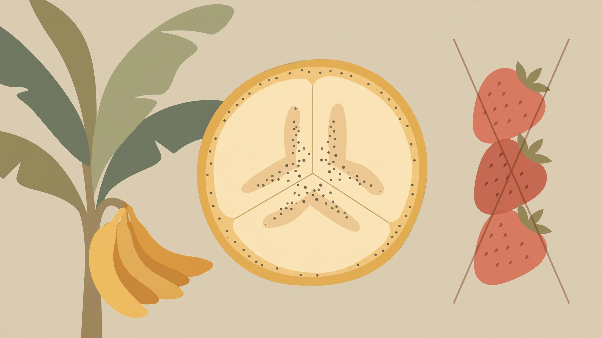
01
Bananas are berries, but strawberries aren’t.
Botanically, a berry is defined by how it develops from a flower. Bananas qualify; strawberries technically don’t.
A little illustrated cabinet of curiosities

Botanically, a berry is defined by how it develops from a flower. Bananas qualify; strawberries technically don’t.
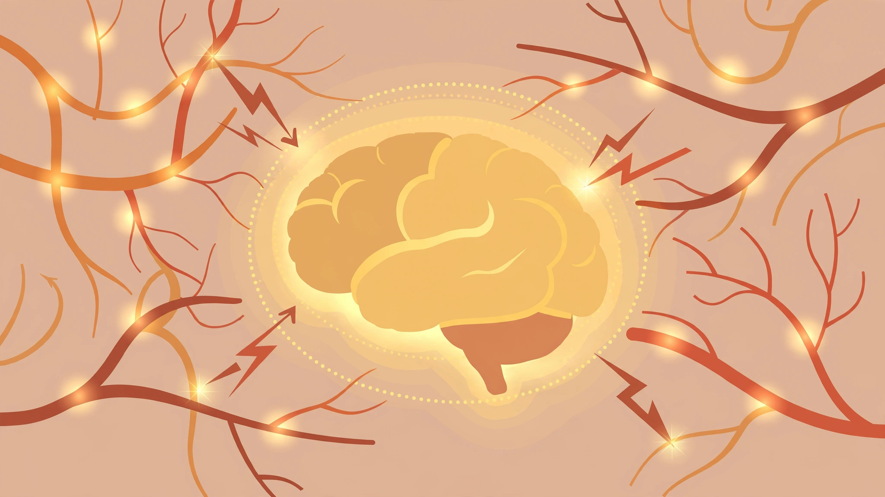
The brain has no pain receptors. Headaches happen because surrounding tissues—blood vessels, nerves, muscles, and membranes—can generate pain.
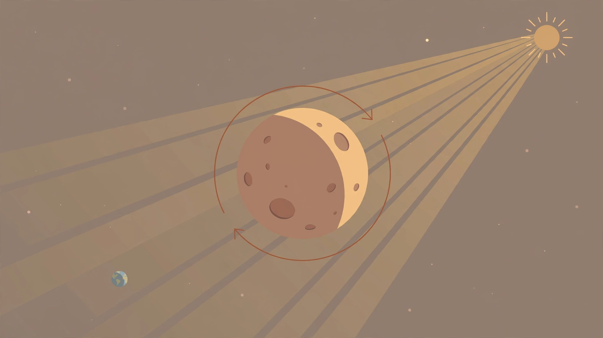
The Moon rotates, so both sides receive sunlight. The far side is simply the side we don’t normally see from Earth.
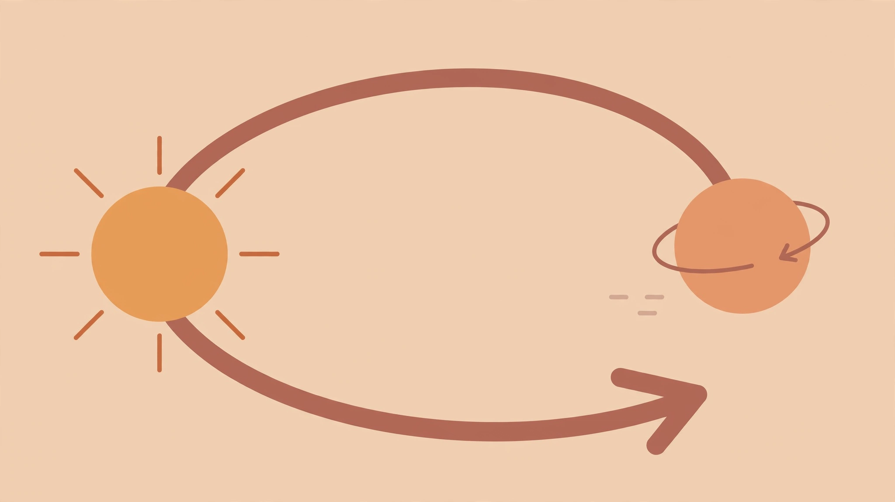
Venus takes about 243 Earth days to rotate once, but only about 225 Earth days to orbit the Sun.
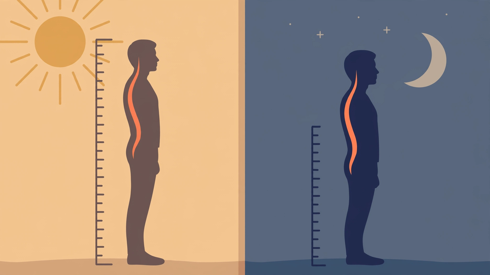
While you sleep, the discs between your vertebrae decompress. During the day, gravity compresses them again, so you can be roughly 1–2 cm shorter by evening.
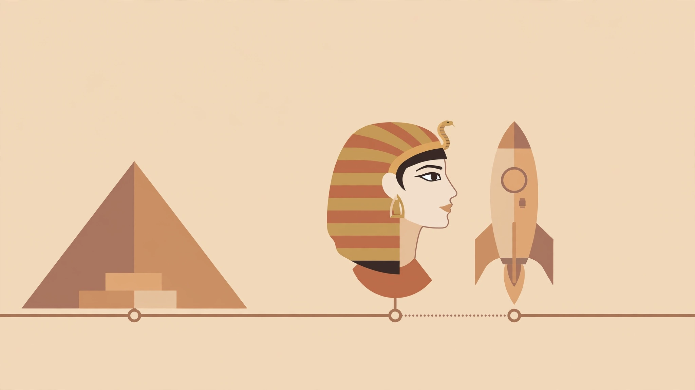
The Great Pyramid was built around 2560 BCE. Cleopatra lived around 69–30 BCE, while humans landed on the Moon in 1969 CE.
When heated by the Sun, the iron expands. Its height can increase by roughly 15 cm under strong temperature changes.
Balance, temperature, pain, body position (proprioception), and internal sensations such as hunger are generally considered additional senses.
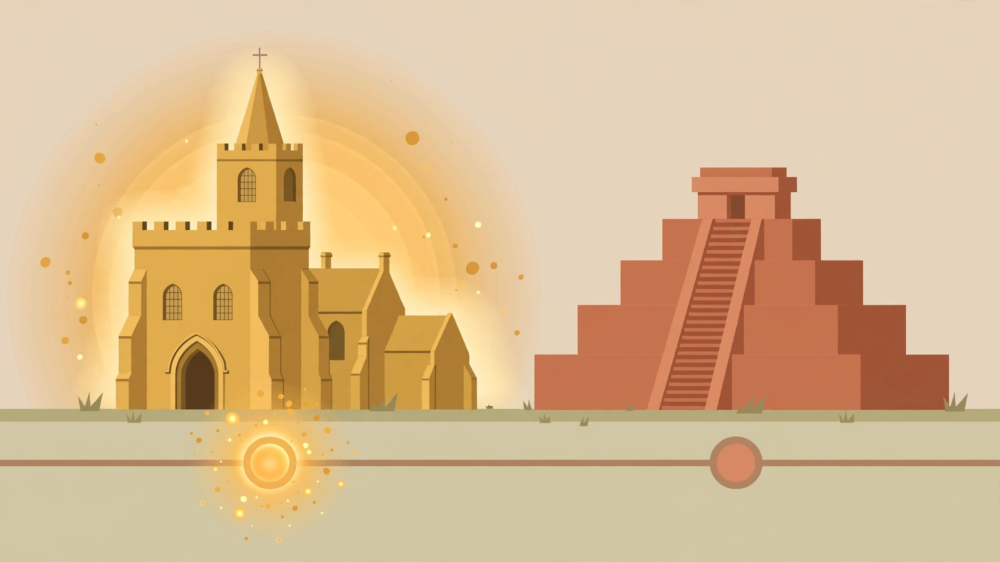
Teaching existed at Oxford by around 1096. The Aztec Empire emerged centuries later, in the 15th century.
A typical cumulus cloud can contain hundreds of tons of water—but spread over a huge volume, with tiny droplets suspended in air.
The number of possible chess game sequences is estimated at around 10120, vastly exceeding estimates of roughly 1080 atoms in the observable universe.
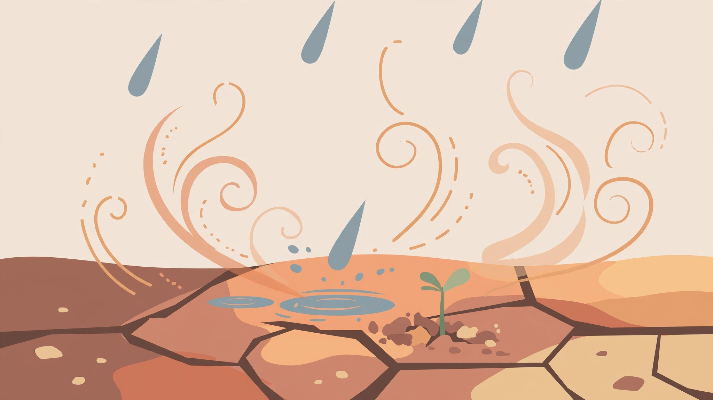
That earthy smell comes partly from compounds released by soil and plants, including a molecule called geosmin.
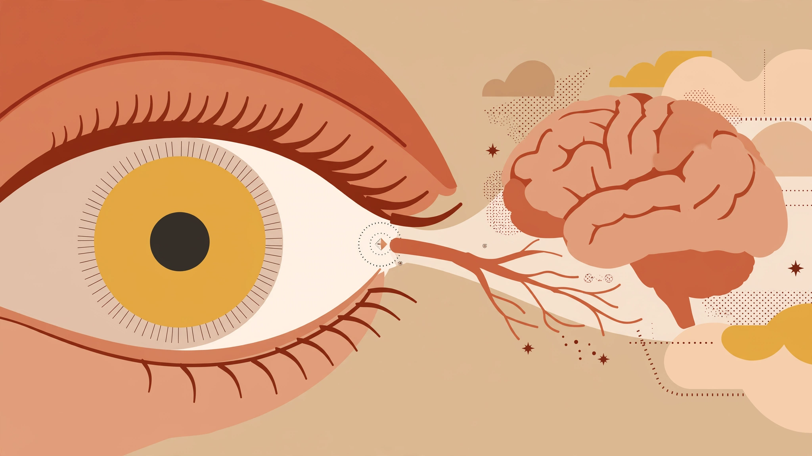
That’s where the optic nerve leaves the eye, creating a small area with no photoreceptors. Your brain fills in the missing information.
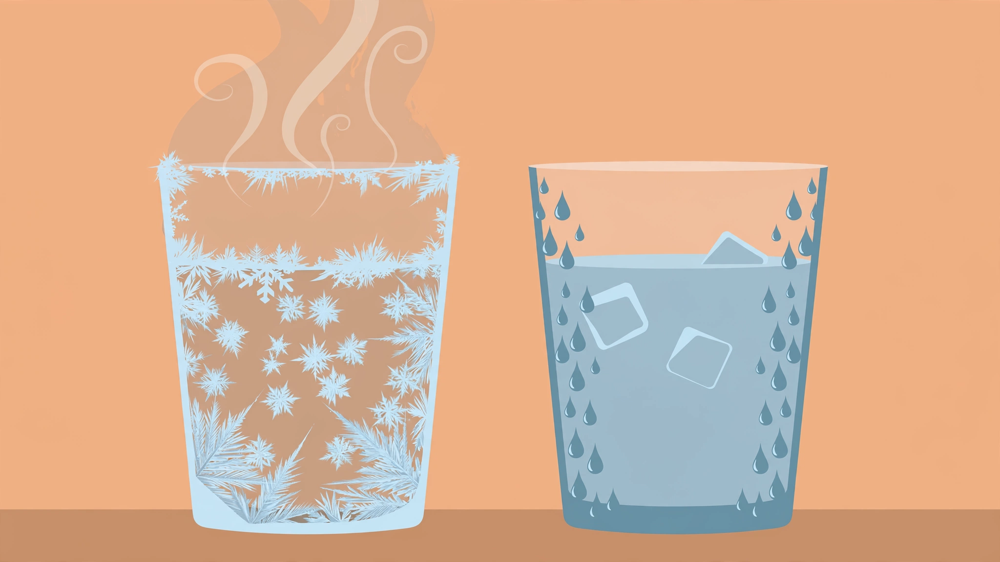
This is known as the Mpemba effect. It can occur under particular conditions, although it isn’t universal and scientists still study exactly which mechanisms dominate.
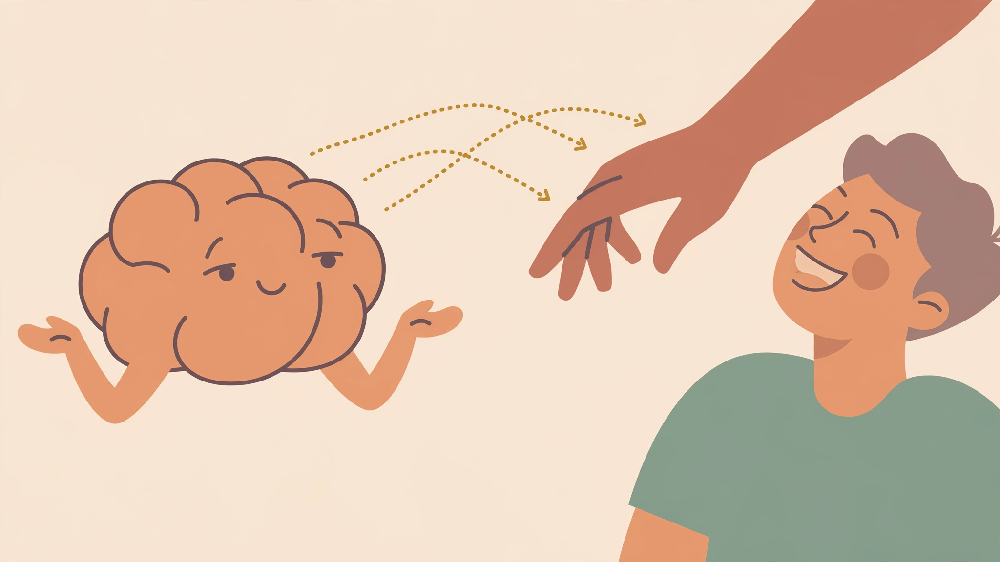
Your brain predicts the sensory consequences of your own movements and reduces the response to sensations it expects. Basically, your brain says, “Yeah, I know you’re doing that.” 😄